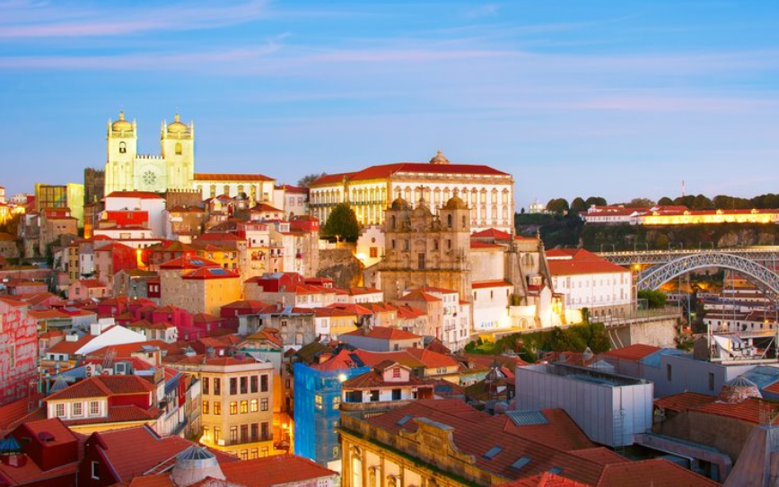
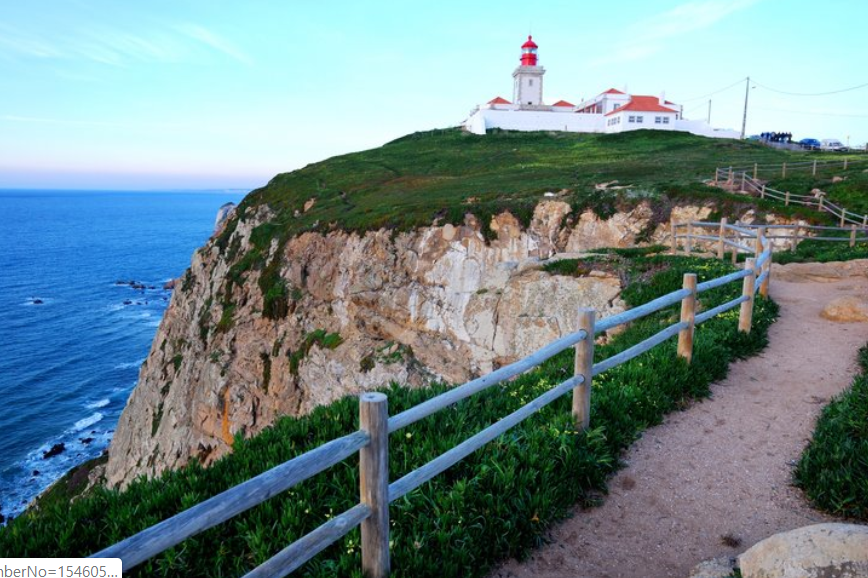
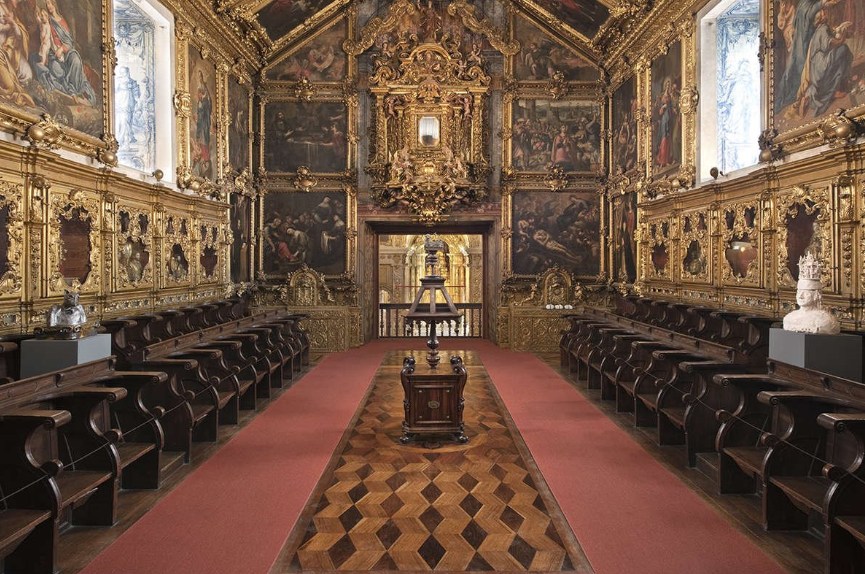
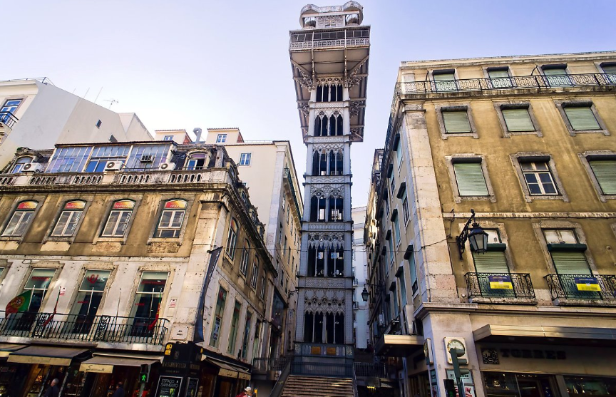

1. Europe
겨울에도 온화한 포르투갈
▶ 여행시기: 6월 ~ 8월▶ 추천 장소
|  | 포르투 구시가지는 여유롭지만 활기차고 낭만이 있다. 워낙 작은 도시라 매일 보는 풍경이 크게 다르지 않지만 그럼에도 불구하고 포르투에는 꼭 방문해보길 추천한다. 날씨에 따라 그날 분위기에 따라 시시각각 변하는 포르투만의 매력에는 끝이 없기 때문이다. 구시가지에 위치한 볼량 시장에서는 현지인들의 일상을 잠시나마 만끽할 수 있다. 먹음직스럽게 진열된 과일, 포트와인들과 유럽 감성 가득한 소품, 의류, 식기 등을 구경하는 것만으로도 시간 가는 줄 모른다. |
|  | 두 번째로 까보다로까는 대서양의 시작이자 유라시아 대륙 최서단의 마침표를 찍는 곳이다. 포르투갈의 유명한 시인이었던 카몽이스는 이곳을 일컬어 ‘땅이 끝나고 바다가 시작되는 곳’이라고 표현하기도 했다. 이곳의 볼거리라고는 오직 카몽이스의 시 구절이 새겨진 십자가 돌탑과 해안 절벽, 그리고 드넓은 대서양뿐이지만 그 어떤 관광 명소보다 많은 것을 생각하게 한다. 그리고 관광안내소에서 유럽 대륙 서쪽 끝에 다녀간다는 증명서를 유료로 받을 수 있으니 기념품으로 사두는 것도 좋다. 또한, 그라사 전망대는 포르투갈 수도인 리스본은 7개의 언덕으로 이루어진 도시다 보니 시내 풍경을 감상할 수 있는 전망대가 제법 많은 편이다. 위치에 따라 볼 수 있는 뷰 포인트가 달라 신중히 선택하는 것이 좋은데 그중 추천하는 곳 하나가 바로 그라사 전망대이다. 전망대에 오르면 바다처럼 넓은 테주강과 함께 넓게 펼쳐진 시내를 한눈에 감상할 수 있다. 전망대에 위치한 카페에 앉아 시원한 음료와 함께 풍경 그리고 바람을 함께 즐기면 좋다. 내려오는 길에는 동화 속에 나올법한 아기자기한 집들과 기념품 가게가 곳곳에 있어 심심치 않다. |
|  | 아줄레주 박물관은 1509년에 건축된 성모 수도원을 박물관으로 개조한 아줄레주 박물관은 포르투갈 특유의 타일 장식인 ‘아줄레주’를 감상할 수 있는 리스본의 대표적인 박물관이다. 작고 아름다운 돌이라는 말에서 유래한 아줄레주는 포르투갈만이 갖는 독특한 문화적 양식으로 디테일하면서도 화려함이 특징이다. 그래서 박물관 내부에 들어서면 화려한 아줄레주 장식과 함께 수많은 그림, 도자기 등이 전시되어 있다. |
|  | 산타 주스타 엘리베이터는 엘리베이터 꼭대기에 전망대가 있는 이곳은 아름다운 야경을 볼 수 있는 최적의 장소로 꼽힌다. 포르투갈의 색채보다는 조금 다르게 마치 에펠탑의 축소판 같은 느낌의 독특한 철탑이 있는데 파리 에펠탑 설계자인 구스타프 에펠의 수제자가 설계한 것이라고 한다. 처음 설계 당시 윗마을과 아랫마을을 연결하는 교통수단으로 만들어졌지만 현재는 야경 명소로 많은 이들이 찾고 있다. 엘리베이터에 오르면 호시우 광장, 피게이라 광장, 상 조르즈 성 등 리스본의 은은한 야경을 감상할 수 있다. |